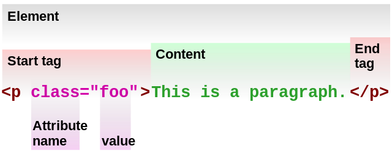

Created by Andrei Sumar

<!DOCTYPE html> <html lang="en"> <head> <meta charset="utf-8"> <title>Hello World</title> </head> <body> <h1>Hello World</h1> <p<This is a website.</p> </body> </html>
<!DOCTYPE html PUBLIC "-//W3C//DTD XHTML 1.0 Strict//EN" "http://www.w3.org/TR/xhtml1/DTD/xhtml1-strict.dtd"> <html lang="EN" xml:lang="EN" xmlns="http://www.w3.org/1999/xhtml"> <head> <meta http-equiv="content-type" content="text/xml; charset=utf-8" /> <title>Hello World</title> </head> <body> <h1>Hello World</h1> <p>This is a website.</p> </body> </html>
<A Href="/xhtml/xhtml_tutorial.html">XHTML Tutorial</A>
<a href="/xhtml/xhtml_tutorial.html">XHTML Tutorial</a>
<p>This paragraph is not written according to XHTML syntax.
<img src="/images/xhtml.gif" >
<p>This paragraph is written according to XHTML syntax.</p>
<img src="/images/xhtml.gif" />
<img src="/images/xhtml.gif" width=250 height=50 />
<img src="/images/xhtml.gif" width="250" height="50" />
<option selected>
<option selected="selected">
<!DOCTYPE html> <html lang="en">
<head> <meta charset="utf-8"> <title>Hello World</title> </head>
<body> <h1>Hello World</h1> <p>This is a website.</p> </body>
</html>